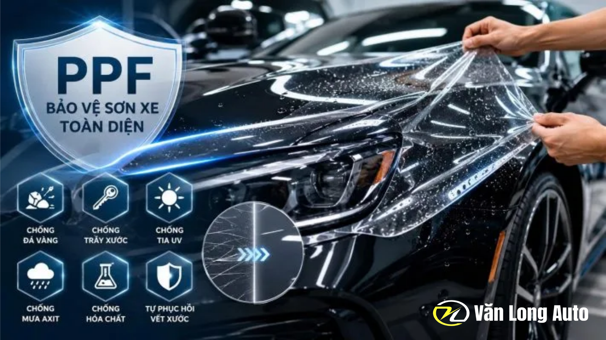
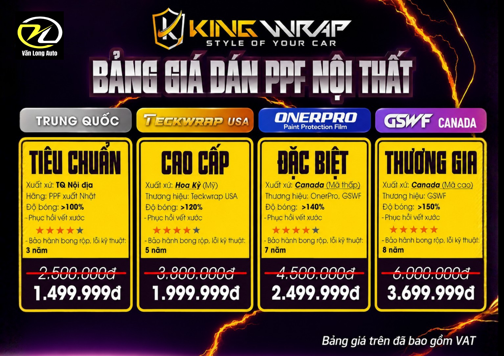
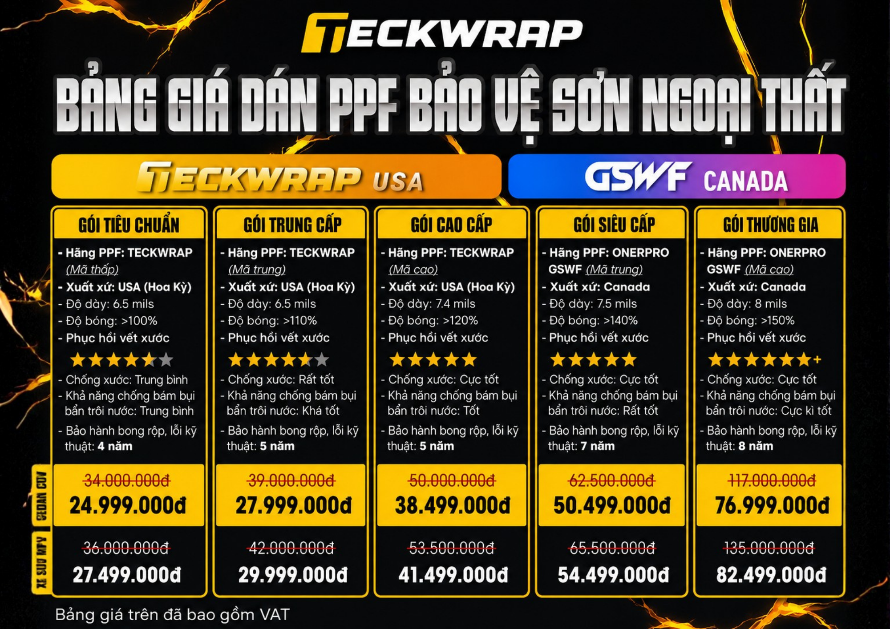

PPF ô tô là gì?
PPF (Paint Protection Film) là loại màng phim bảo vệ được làm từ polyurethane hoặc TPU cao cấp, có độ trong suốt cao và được dán trực tiếp lên bề mặt ngoại thất của xe.
Lớp phim hoạt động như một lớp bảo vệ cho sơn nguyên bản, giúp hạn chế trầy xước do đá văng, cành cây, va quệt nhẹ, nhựa đường cũng như các tác nhân môi trường như tia UV, mưa axit và hóa chất.

Lợi ích nổi bật khi dán PPF
Hạn chế vết xước do đá văng, cành cây và những va quệt nhẹ khi sử dụng xe.
Nhiều dòng PPF cao cấp có khả năng hỗ trợ phục hồi vết xước nhẹ khi gặp nhiệt.
Giảm tác động của tia UV và quá trình oxy hóa gây bạc màu bề mặt sơn.
Hạn chế ảnh hưởng từ mưa axit, nhựa cây, phân chim, côn trùng và hóa chất.
Giúp bề mặt xe duy trì vẻ sáng bóng và hạn chế xuống màu trong quá trình sử dụng.
Bảo vệ lớp sơn zin tốt hơn, hỗ trợ duy trì tình trạng ngoại thất khi sử dụng lâu dài.
Các gói dán PPF phổ biến
PPF Cản Trước
Tập trung bảo vệ khu vực dễ chịu đá văng và va quệt nhất, phù hợp khi muốn tối ưu chi phí.
PPF Đầu Xe
Có thể bao gồm nắp capo, cản trước, gương chiếu hậu, chắn bùn trước và cụm đèn tùy cấu hình.
PPF Full Toàn Xe
Bao phủ các bề mặt sơn ngoại thất như capo, cản trước, cánh cửa, hông xe, cản sau và những chi tiết sơn khác.
Bảng Giá PPF Tại Văn Long Auto

